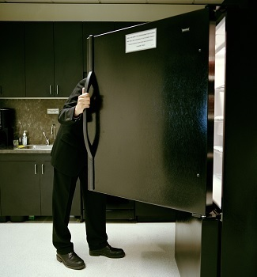
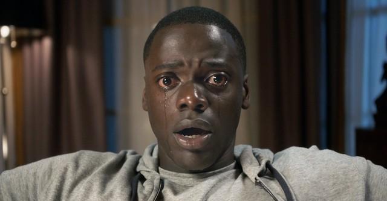
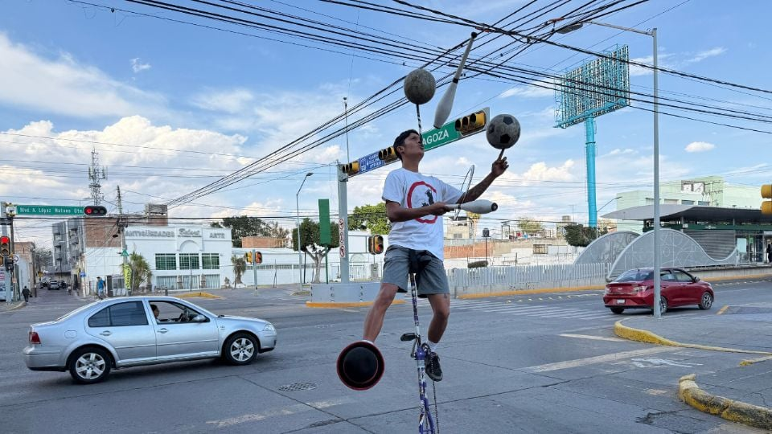

Articulo original (En Inglés): Jason Pargin, 17 Noviembre 2015 cracked.com
Traducción y redacción al Español: Jonatan Ardón
La humanidad se define principalmente por su incapacidad para comprender lo obvio. Así que déjame preguntarte esto:
¿Cuál es la tontería más obviamente errónea que la gente cree a diario y que, no sé, hasta tú también crees?
Me refiero a algo que conscientemente sabes que está mal, pero cinco minutos después de que te recuerdan que eso está mal, lo vuelves a olvidar. Si no se te ocurre ningún ejemplo, seguro que a mí sí. Y te pasa factura más a menudo de lo que crees...
5 | Dentro de nosotros estamos seguros de que todos sienten el mismo placer y dolor
Movus/iStock/Getty Images
Cuando eres un niño pequeño, asumes que todas las personas y todas las cosas de tu mundo son idénticas a ti. Por eso solías pensar que tus peluches se sentían solos si no jugabas con ellos y que a tus papás les encantaría ver tus dibujos animados si les dieran una oportunidad. Es una fase normal del desarrollo de un niño y, como señala este tipo mucho más inteligente que yo, nunca llegamos a superarla del todo.
Probablemente recuerdes cuando eras adolescente y escuchabas una nueva canción increíble que te daba ganas de bailar como un loco... y luego se la ponías a un par de amigos y ellos ponían esa cara de asco. Ya sabes, ¿esa cara de fingir nerviosamente que te gusta algo que te parece horrible? Lo que sigue son los tres minutos más incómodos de tu vida, durante los cuales te enfadas cada vez más mientras te preguntas "¿Por qué fingen que no les gusta?"". Pero, con el tiempo, maduras y te das cuenta de que no a todo el mundo le gustan las mismas cosas.
Años más tarde, te da gripe, pero sigues trabajando sin importarte nada por que te pones la camiseta por la empresa y primero muerto antes que fallarle al jefecito en el trabajo. Entonces, un compañero de trabajo se contagia y se toma tres días de baja por enfermedad. Pones los ojos en blanco y lo llamas cobarde, asumiendo automáticamente que los dos tienen exactamente los mismos síntomas, pero que uno de los dos es más fuerte.
Lo obvio que se te escapará es que el sufrimiento es tan subjetivo como la música. Demonios, la ciencia incluso dice que las personas pelirrojas tienden a sentir más dolor que los demás, debido a una peculiaridad genética. Parece que lo mismo ocurre con las mujeres, debido a la forma en que las señales de dolor se transmiten al cerebro femenino. Mientras tanto, las personas de las zonas más frías del mundo dejan literalmente de sentir el frío como lo hacemos el resto. Algunas personas casi nunca sienten miedo, no por valentía, sino por un fallo en ciertas conexiones del cerebro (a veces se les llama psicópatas). Todas las sensaciones que nos motivan a realizar algunas acciones y evitar otras son, en realidad, completamente diferentes de una persona a otra.
SbytovaMN/iStock/Getty Images
Te encogerás de hombros y dirás: "Claro, todo el mundo lo sabe, idiota", pero cinco minutos después de leer este artículo, actuarás de una manera que demostrará que no es así. He tenido amigos que se matan en el gym y que se han frustrado conmigo cuando les digo que nunca he sentido la euforia de la "adrenalina" que se produce al hacer ejercicio intenso. Dicen que es porque no me esfuerzo lo suficiente, mientras que la ciencia dice que algunas personas son físicamente incapaces de sentirla. Entonces, ¿mis amigos están en forma porque son más dedicados que yo o simplemente disfrutan de la "euforia" del ejercicio? Es evidente que quieren que lo primero sea cierto. A mis amigos delgados y que no engordar para nada no les gusta admitir que hay una hormona que te da hambre y que algunas personas simplemente tienen más cantidad de ella, les gusta más la idea de que ellos son disciplinados con la dieta y el ejercicio.
Eso es porque una vez que aceptas la idea de que realmente se sentiría completamente diferente vivir dentro del cuerpo de otra persona, todo cambia. Después de todo, si nadie elige su cuerpo, su mente, sus emociones, su crianza, sus traumas ni su biología… ¿cuándo tienes la certeza moral de culpar a alguien por sus acciones?
4 | No vemos las batallas internas
marchia/iStock/Getty Images
Sé lo que estás pensando. Siempre sé lo que estás pensando. "Ah, ¿así que eres uno de esos imbéciles que dicen que nada es culpa de nadie, porque esas pobres almas son incapaces de resistirse a sus impulsos? Entonces, cuando alguien tortura a un niño hasta la muerte, ¿se supone que debemos darle un abrazo y decirle que no pudo evitarlo? ¿Es eso, imbécil? Eres un idiota".
¡No! Tú te defines totalmente por lo bien que luchas contra tus impulsos destructivos y superas el dolor. Madurar consiste en mejorar en eso; el éxito consiste en dominarlo. Vencer el impulso de procrastinar, de rendirte, de ser perezoso... ¡así es como se llega a la cima, amigo! ¡Compra mi libro!
Pero...
¿Conoces a ese tipo de la oficina que siempre está enojado? El mes pasado explotó porque alguien perdió una factura. Las Navidades pasadas, se enfadó muchísimo porque pensó que alguien le había robado el almuerzo de la nevera. Lo ves hacer berrinches y te sorprende lo inmaduro que es. Después de todo, tú también te enojas, ¡pero lo controlas! Diablos, te han robado el almuerzo muchas veces y nunca has pateado un bote de basura con tanta fuerza que haya quedado abollado y nunca has hecho llorar a la de recursos humanos.
Ryan McVay/Photodisc/Getty Images
Sin embargo, aquí está el problema: desde tu punto de vista, él "siempre" está enojado. Desde el suyo, ha tenido dos arrebatos en varios meses y, entre esos incidentes, ha resistido con éxito el impulso de explotar 162 veces. Sus impulsos de enojo son más frecuentes que los tuyos y los siente con más intensidad. Para él, cada día "normal" es el resultado de una batalla ganada con esfuerzo... pero tú solo ves cuando pierde. Él se ve a sí mismo como el héroe de su propia vida, maltratado y magullado por sus demonios personales. Tú lo ves como un hombre-niño ridículo al que le encanta oírse gritar. Odias su carácter inestable y furioso.
O ves cómo tu amiga llega deprimida a casa del trabajo y se desploma inmediatamente en el sofá, negándose a salir o hacer nada divertido. Odias la forma en que ella simplemente... se rinde y se niega incluso a hablar de ello. Para ti es invisible el brutal esfuerzo que ha realizado solo para poder aguantar en el trabajo. Así que te molesta. O como cuando descubres que tu pareja te está engañando. No has visto las docenas de veces que ha tenido el impulso y se ha resistido. Solo ves el momento en que finalmente ha cedido. Y quieres matarlo por ello.
YouTube
Y como casualmente apareciste después de estas batallas y solo después de que ellos explotaron, ellos consideran que tus quejas por sus errores son equivalentes a las de la policía si hubieran llegado a la casa de los Armitage y encontrado a Chris en todo ese desastre tras los acontecimientos de la pelicula Get Out. "¿Por qué incendiaste toda la casa, idiota? ¡Toda la familia está muerta y es culpa tuya! ¡No, no quiero oír tus excusas! ¿De quién es este ojo?".
Universal Pictures
3 | ...Pero por lo general nos perdonamos a nosotros mismos por los mismos errores.
arselozgurdal/iStock/Getty Images
Aquí hay una pregunta que creo jamás te has hecho a ti mismo: ¿Por qué es un insulto decir que los venezolanos solo llegan a arruinar el país al que migran o que las mujeres son pésimas conductoras?
Y solo para aclarar: esos son insultos (por lo menos en la mayoría de Latinoamérica). Si alguien te corta el paso en el tráfico, se cambia de carril sin poner la direccional o frena de repente y ves que es una mujer, rápido le gritan: ¡Tenía que ser vieja! Seguro la mujer al volante se va a ofender y, dependiendo de cómo sea, puede que llore o te maltrate de vuelta. O si de repente ocurre alguna noticia negativa sobre migrantes en algún país, rápido la gente se pregunta: ¿De quién sospeCHAMOS?
Pero, ¿por qué es un insulto? Después de todo, los venezolanos no son los únicos migrantes que han causado problemas en los países a los que llegan, y los hombres están más involucrados en accidentes de tráfico en general. Además, son responsables de un mayor número de accidentes graves y fatales debido a factores como una conducción más arriesgada, el exceso de velocidad y el consumo de alcohol o drogas; mientras que las mujeres suelen estar implicadas en accidentes mucho más leves (como rayones o pequeños golpes). Bueno, lo que en realidad sucede es un ritual por el que todos pasamos para sentirnos mejor con nosotros mismos. Este ritual consta de dos pasos:
Para la primera parte del ritual, imaginen a un grupo de amigos compartiendo historias vergonzosas sobre cosas que hicieron. Como muchos de ustedes saben, en varias ocasiones me quedé sin dinero para el transporte público y tuve que pedir dinero a extraños para juntar monedas y así poder ir a casa. Cuento esa historia entre mi grupo de amigos porque sé que siempre sale el típico wey que dice: "Eso no es nada" e intenta superar mi historia con alguna todavía más vergonzosa. "Una vez" —dice el alucín—, "también me quedé sin dinero y tuve que pedir, pero como nadie me daba, vi unas piedras en la calle. Tenía una mascarilla y, para que nadie me reconociera me la puse y me puse a hacer malabares en el semáforo. Junté tanto dinero que hasta me alcanzó para comer." Y así todos cuentan su propia historia acerca de lo mismo. El objetivo es sentirse mejor con uno mismo al ver que los demás también cometen errores y comprobar que todos estamos igual de jodidos.
Gustavo Carreón/lasillarota.com
Pero luego viene la segunda parte del ritual, en la que nos reiremos de los errores de los demás de una manera completamente despiadada y maliciosa, con el único fin de asegurarnos de que sus errores y fracasos no son como los nuestros, sino aún peores: "Pero no como los limpiavidrios, que ya me tienen harto, porque les dices que no y los infelices aun así lo hacen; parecen animales que no entienden."
Por eso la mayoría de hombres pasa las primeras dos décadas de vida haciendo chistes sobre gays con sus amigos de la colonia. Para un grupo de chicos asustados por lo que les estaban haciendo sus hormonas ("No puedo creer que me acabo de manosear con una revista de Avon"), era muy reconfortante sentarse y decir: "Wey, ¿te imaginas excitarte con el trasero de un hombre?".
De ahí las bromas sobre "los chamos". La implicación es que, mientras que mi comportamiento es el de un tipo normal, el suyo se debe a un vergonzoso fracaso cultural para controlar sus impulsos. Los convierte en ladrones caricaturescos, sin más autocontrol que los perros. Es la misma razón por la que los chistes sobre gays en la prepa solían insinuar que los homosexuales son violadores voraces que no pueden controlar su depravación, total, acosar a una chica adolescente en un lugar oscuro no es tan malo como ser gay ¿Verdad?
Pero, además de hacernos comportar como idiotas con los demás, esta doble moral también significa...
2 | Tus propias debilidades te toman constantemente por sorpresa.
mikeinlondon/iStock/Getty Images
Hay algo que todo el mundo hace la primera vez que se sienta a elaborar un presupuesto. Lo planifican todo hasta el último centavo; los más inteligentes incluso reservan algo de dinero para reparaciones de emergencia del coche y ese tipo de cosas. Pero ellos también se olvidan por completo de planificar una categoría super importante:
Meter la pata.
Me refiero al fin de semana en el que estás tan deprimido que compras un montón de donas del día anterior en la tienda y te las comes todas tú solo. Me refiero a la subasta de Facebook que ganas gracias a una puja nocturna en estado de ebriedad, o al costoso regalo que compras para alguien especial y descubres que no te corresponde, o a las estúpidas compras impulsivas que inevitablemente harás cuando estés superando la ruptura y quieras algún tipo de luz en tu vida (¡quizás la próxima vez sea un cachorro!).
Chris Amaral/DigitalVision/Getty Images
"Bueno, simplemente no gastaré en esas cosas", dirás, "¡ahora que tengo un presupuesto ya no voy a hacer compras compulsivas!". Verás, al tú del futuro lo tratas de la misma manera en la que tratas a los desconocidos: piensas que, con un poco de esfuerzo, pueden hacer cualquier cosa. Como no eres tú, crees que pueden lograr de todo. ¡El tú del futuro no hará compras tontas para calmar su estado de ánimo desolado! Eso es lo que hacía el tú del pasado; a partir de ahora, ¡todo será mejor!
Pasa lo mismo cuando empiezas a salir con alguien nuevo: nunca piensas, "¡Esta será una buena persona que podrá manejar mis cambios de humor y mis episodios de frialdad emocional dentro de seis meses, cuando la etapa bonita haya pasado!". En cambio, te imaginas a ti mismo siendo increíble, estable, cariñoso y amoroso para siempre. ¿Y qué tal cuando surge la oportunidad de aceptar un segundo trabajo, uno que eliminaría tanto el sueño como tu vida social? "¡No hay problema! ¡El yo del futuro no tiene sueño ni se siente solo! ¡El yo del futuro es un robot que trabaja con absoluta precisión y fiabilidad!".

Purestock/Purestock/Getty Images
Claro, hay personas que hacen lo contrario: bromean diciendo que son unos perdedores destinados a terminar viejos y borrachos. Sin embargo, en la mayoría de los casos, la verdadera razón de su depresión es que se sienten continuamente decepcionados al comprobar cómo vuelven a cometer los mismos errores una y otra vez. Sus propias debilidades siguen sorprendiéndolos, porque se niegan a aceptar con realismo lo poderosas que pueden ser las tentaciones en comparación con su fuerza de voluntad.
Es difícil, si no imposible, aceptar el hecho de que siempre vamos a meter la pata en alguna ocasión. Y, a riesgo de que se me saque de contexto, tengo que decir que esto realmente me ha ayudado a apreciar a Satanás.
El concepto de un tentador que puede actuar desde el interior de tu propia mente, ofreciéndote placeres a corto plazo a cambio de destrucción a largo plazo... tiene sentido. No me refiero a un ser literal, sino a una forma de ayudarte a salir de ti mismo en esos momentos cruciales. Sientes un impulso y te detienes para decir: "¿Es el diablo quien me está tentando?". Te hace sospechar de tus placeres a corto plazo: el hambre, la ira, el egoísmo... toda esa porquería que, a la larga, arruinará tus relaciones y tu salud por un momento de placer que no vale la pena. Cuando alguien más mete la pata, puedes verlo como una víctima más del señor de las tinieblas, y por lo tanto, tendrás más compasión de esa persona.
Pero, ya sabes, a pesar de haber un diablo, hay una razón por la que muchos cristianos siguen engañando a sus esposas y bebiendo hasta morir. Todo lo que tienen que hacer es cambiar el foco de atención a otras personas y mantenerlo ahí "¡Los gays son solo heterosexuales que han sido tentados al pecado por el diablo!". Oye, hablando de eso...
1 | Ofrecemos soluciones sin sentido y sin fundamento... y luego nos enojamos cuando no funcionan.
Mark Wilson/Getty Images News/Getty Images
Esto último es probablemente la ilustración más perfecta de lo que estoy hablando en este artículo. ¿Por qué muchos cristianos parecen tan obsesionados con la homosexualidad? ¿Por qué han decidido que el matrimonio gay es el único tema capaz de exterminar para siempre la luz de los justos del universo?
Porque es la prueba definitiva de que es mentira que todos experimentamos las mismas tentaciones.
Si sientas a un grupo de personas ansiosas y cansadas y empiezas a sermonearles sobre sus debilidades (codicia, gula, crueldad mezquina, adulterio), obtendrás un montón de gente molesta que se mueve incómoda en los bancos. Pero, cuando tomas a esa misma multitud y les sermoneas contra tentaciones que nunca sienten, si arremetes contra la "agenda gay", los musulmanes y la depravación de Hollywood, ahora obtienes algunos vítores y "Amén". "¡Felicitémonos todos por no sucumbir al impulso de cambiar nuestra orientación sexual o convertirnos al islam! ¡Somos verdaderos guerreros de la virtud!".
La homosexualidad se convierte en un blanco tan grande porque es una tentación que la mayoría de la congregación no siente… y entonces es fácil condenarla sin sentir culpa propia. En cambio, hablan contra cosas que ellos mismos piensan que jamás harán (ser gay, ser musulmán) porque eso les hace sentir moralmente superiores, sin tener que enfrentarse a sus propios pecados.
Durante años creí que la homosexualidad no era una orientación real, sino un “mal hábito” que cualquiera podía corregir si tenía suficiente disciplina moral. Desde la perspectiva extremista con la que crecí (que ni siquiera era doctrina oficial, si no opiniones de gente extremadamente conservadora), todos éramos heterosexuales porque “así lo había dicho Dios”, así que mi “solución” al matrimonio gay era simplemente que las personas homosexuales se casaran con alguien del sexo opuesto. Lo que yo no podía aceptar era la idea de que, si yo hubiera nacido en su cuerpo, sentiría exactamente lo mismo que ellos: la misma atracción, el mismo deseo, la misma identidad. Aceptar eso habría destruido mi visión del mundo, porque implicaba reconocer que no era moralmente superior a nadie, solo una persona que nunca había enfrentado las tentaciones o luchas que criticaba.
Esa arrogancia también se reflejaba en otras áreas: pensaba que si hubiera nacido en un barrio pobre, simplemente “trabajaría duro y saldría adelante”, o que perder peso era “solo cuestión de querer”. Me felicitaba por superar tentaciones que jamás había sentido, mientras ignoraba las debilidades reales que sí tenía. Con el tiempo entendí que gran parte del odio, hacia los homosexuales, los pobres o las personas con sobrepeso, nace de suposiciones simplistas, falta de empatía y una falsa sensación de superioridad moral. Ahora veo que solemos juzgar a otros sin haber vivido nada de lo que ellos viven, creyendo que nuestras decisiones son puramente morales cuando, en realidad, están moldeadas por circunstancias, emociones y experiencias que no todos compartimos.
Pero, te aseguro que incluso los expertos cometen el mismo maldito error, y siempre lo harán. Elige cualquier tema. Como el de la obesidad: cada mes escuchamos una nueva teoría sobre si combatir la obesidad consiste en reducir los carbohidratos, las grasas o el azúcar, o simplemente ignorarlo todo y reducir las calorías. Rara vez parecen tener en cuenta lo único que realmente importa: qué dieta no te deja con hambre. Porque si te sientes abrumado por las ganas de comer, acabarás sucumbiendo. Por eso el ejercicio no te hace perder peso: el ejercicio quema calorías, pero también te da más hambre. Y exactamente el 100 % de los seres humanos tienen un umbral en el que ya no tienen energía para resistirse a un impulso. No me importa quién seas: si el propio Donald Trump tuviera la suficiente necesidad, le suplicaría a un venezolano ilegal que lo alimentara. Es ciencia.
Justin Sullivan/Getty Images News/Getty Images
¿Y qué hay de la delincuencia? Estadísticamente, si creciste bajo ciertas circunstancias, tienes muchas más probabilidades de convertirte en delincuente. Ahora, no faltará el que diga: "¡Bueno, yo crecí en la zona peligrosa de la ciudad y nunca he cometido un delito! Lo más que me ha pasado es que me hayan puesto una multa por exceso de velocidad". ¿Lo ven? nuestro impulso para cometer crimenes es menos al de ellos, y nuestro historial está limpio, por lo tanto, esto es prueba de que somos unos santos. Entonces, ¿para qué mover un dedo para ayudar a esos "matones" a cambiar sus vidas? ¡Nadie nos ayudó a nosotros y aqui estamos! Mejor guardar una pistola debajo de la cama y fantasear con dispararles cuando entren a robar.
"Bueno, espera un segundo", dirás, "eso nos lleva de nuevo a la pregunta de la culpa que nunca llegaste a responder. Si no podemos saber con certeza cuánto luchó alguien contra el impulso de hacer cierta barbaridad, si no sabemos sus luchas internas ¿cómo sabemos cuándo está bien llamarlo imbécil o juzgarlo?"
Mmmmm... buena pregunta. Aqui te dejo un video de gatitos haciendo cosas de gatitos.
TikTok - Make your day. (n.d.). https://vm.tiktok.com/ZMDJte64W/